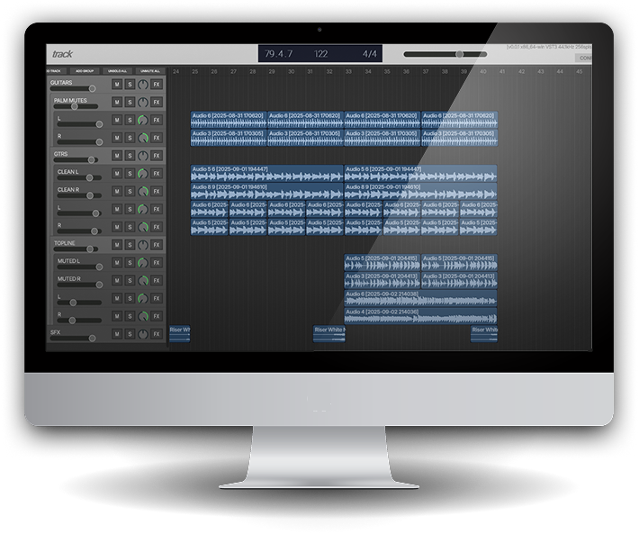
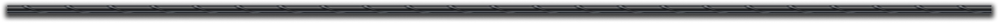

track
About
Features
Install

This is
track
.
Get past that 8 track limit in your DAW.
track is free plugin developed as
a workaround to track count limits in major DAWs
like Ableton Live Lite.
To get start using track,
add the plugin to any track within your host DAW
—you now have a mini DAW in a plugin.
You can
create tracks to play audio clips
, as well as
host other plugins
with delay compensation.

Features
Independently processed
unlimited stereo audio tracks
which can be organized using groups
VST3 plugin hosting
for individual tracks and/or groups, with
latency compensation
Dry/wet control added to every hosted plugin
(even if the hosted plugin doesn't provide it by default)
Drag and drop audio clips
with basic clip manipulation features (like splitting, trimming)
Automation passthrough
from host DAW, to plugins hosted inside of track, with
128 automation inputs
Install
all installations are VST3